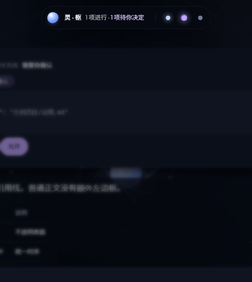
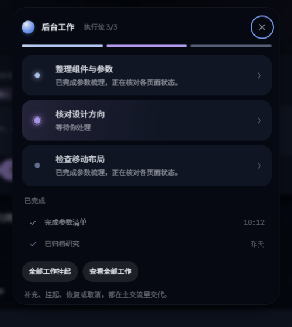
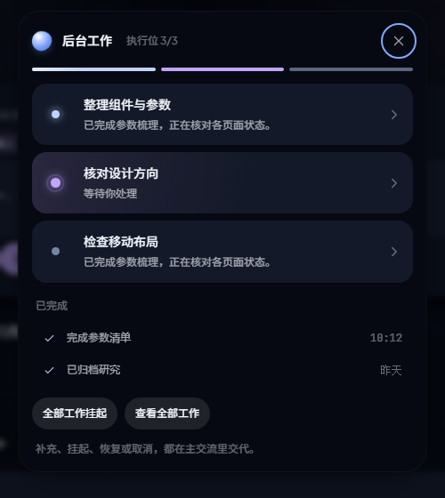
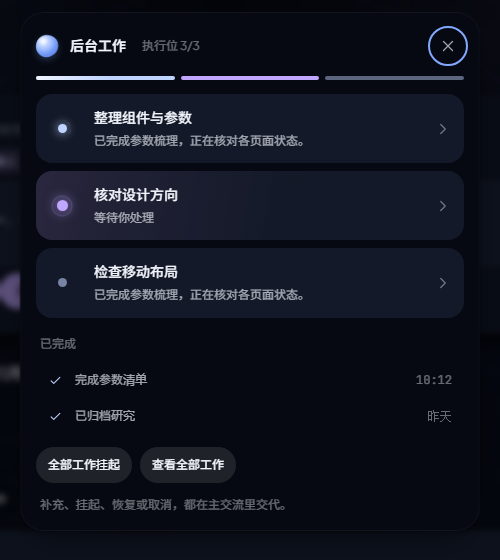
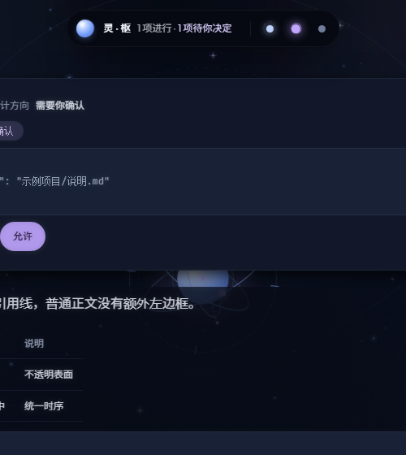
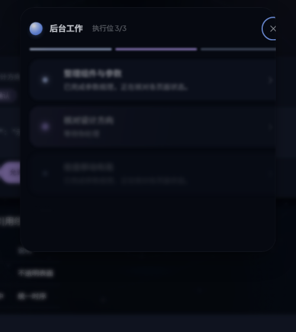

Nexus · 动效前后对照
2026-11-03 · 独立预览 · 标准速度。三个场景采用相同的操作顺序；录制初始化耗时可能略有差异。
主要动作560ms局部420ms分组70ms组内40ms退场220ms流式文字200ms
打开可交互预览 · 打开灵岛等时采样 · 验收记录
页面切换
改动前 · 页面切换改动后 · 页面切换
灵岛切换
改动前 · 灵岛切换改动后 · 灵岛切换
发送与回复
改动前 · 发送与回复改动后 · 发送与回复
灵岛等时采样
改动前外壳240ms

0ms
140ms280ms
560ms
840ms改动后外壳560ms

0ms140ms
280ms560ms840ms